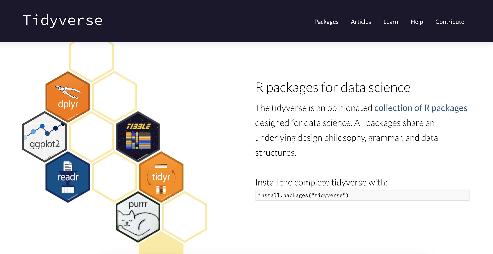

Lecture 1 - Introduction to R via the tidyverse#
(or Reading data, single data frame manipulations & tidying data in R)
Learning objectives#
By the end of this lecture and worksheet 1, students should be able to:
Choose and use the appropriate
readr::read_*function and function arguments to load a given rectangular, plain text data set into RUse the assignment symbol,
<-, to assign values to objects in RWrite a dataframe to a .csv file using
readr::write_csvUse
readr::read_csvto bring data from standard comma separated value (.csv) files into RRecall and use the following
dplyrfunctions and operators for their intended data wrangling tasks:selectfiltermutatearrangedescslicepull%in%
Use the pipe operator,
|>, to combine two or more functionsDefine the term “tidy data”
Discuss the advantages and disadvantages of the tidy data format
Use
tidyr::pivot_wider&tidyr::pivot_longerin R to make untidy data tidy
First, a bit of history about R#
An implementation of the S programming language (created at Bell labs in 1976)
written in C, Fortran, and R itself
R was created by Ross Ihaka and Robert Gentleman (Statisticians from NZ)
R is named partly after the authors and partly as a play on the name of S
First stable beta version in 2000
Source: https://blog.revolutionanalytics.com/2016/03/16-years-of-r-history.html
R currently has more than 15,000 additional packages (as of September 2018)!
Loading/importing data#
Taking our first step in data analysis:

Source: Grolemund & Wickham, R for Data Science
The four most common ways to do this in Data Science#
read in a text file with data in a spreadsheet format
read from a database (e.g., SQLite, PostgreSQL)
scrape data from the web
use a web API to read data from a website
Reading spreadsheet-like data into R#
We recommend using the
readrpackage (part of the tidyverse) functions for plain text filesWe recommed using the
readxlpackage (part of the tidyverse but needs to be explicitly loaded in addition to tidyverse) for Microsoft Excel files.
Workflow for reading in spreadsheet-like data#
Step 1: LOOK AT THE FILE! 👀
Step 2: Match what you see with an appropriate {readr} or {readxl} package function
Step 3: Choose the correct arguments for that file and that function
Step 1: LOOK AT THE RESULT TO MAKE SURE IT WORKED! 👀
The simplest case: a comma separated value file#
The simplest plain text data file you will encounter is a a comma separated value (
.csv) file.read_csv, from the {readr} package, is the function of choice here.In its most basic use-case,
read_csvexpects that the data file:has column names (or headers),
uses a comma (,) to separate the columns, and
does not have row names.
Reading in data/can_lang.csv data using read_csv:
First, load the {readr} or {tidyverse} library:
Note: {readr} is part of the {tidyverse} metapackage, so when you load {tidyverse} you get the {readr} package functions, as well as a bunch of other goodies we’ll learn about shortly!
library(tidyverse)
── Attaching core tidyverse packages ───────────────────────────────────────────── tidyverse 2.0.0 ──
✔ dplyr 1.1.2 ✔ readr 2.1.4
✔ forcats 1.0.0 ✔ stringr 1.5.0
✔ ggplot2 3.4.3 ✔ tibble 3.2.1
✔ lubridate 1.9.2 ✔ tidyr 1.3.0
✔ purrr 1.0.2
── Conflicts ─────────────────────────────────────────────────────────────── tidyverse_conflicts() ──
✖ dplyr::filter() masks stats::filter()
✖ dplyr::lag() masks stats::lag()
ℹ Use the conflicted package (<http://conflicted.r-lib.org/>) to force all conflicts to become errors
Next, use the read_csv function to read the data into R from the can_lang.csv file:
can_lang1 <- read_csv("data/can_lang.csv")
head(can_lang1)
Rows: 214 Columns: 6
── Column specification ─────────────────────────────────────────────────────────────────────────────
Delimiter: ","
chr (2): category, language
dbl (4): mother_tongue, most_at_home, most_at_work, lang_known
ℹ Use `spec()` to retrieve the full column specification for this data.
ℹ Specify the column types or set `show_col_types = FALSE` to quiet this message.
| category | language | mother_tongue | most_at_home | most_at_work | lang_known |
|---|---|---|---|---|---|
| <chr> | <chr> | <dbl> | <dbl> | <dbl> | <dbl> |
| Aboriginal languages | Aboriginal languages, n.o.s. | 590 | 235 | 30 | 665 |
| Non-Official & Non-Aboriginal languages | Afrikaans | 10260 | 4785 | 85 | 23415 |
| Non-Official & Non-Aboriginal languages | Afro-Asiatic languages, n.i.e. | 1150 | 445 | 10 | 2775 |
| Non-Official & Non-Aboriginal languages | Akan (Twi) | 13460 | 5985 | 25 | 22150 |
| Non-Official & Non-Aboriginal languages | Albanian | 26895 | 13135 | 345 | 31930 |
| Aboriginal languages | Algonquian languages, n.i.e. | 45 | 10 | 0 | 120 |
Skipping rows when reading in data#
Often times information about how data was collected, or other relevant information, is included at the top of the data file.
Referred to as “metadata”
Reading in data/can_lang-meta-data.csv
can_lang2 <- read_csv("data/can_lang-meta-data.csv", skip = 2)
head(can_lang2)
Rows: 214 Columns: 6
── Column specification ─────────────────────────────────────────────────────────────────────────────
Delimiter: ","
chr (2): category, language
dbl (4): mother_tongue, most_at_home, most_at_work, lang_known
ℹ Use `spec()` to retrieve the full column specification for this data.
ℹ Specify the column types or set `show_col_types = FALSE` to quiet this message.
| category | language | mother_tongue | most_at_home | most_at_work | lang_known |
|---|---|---|---|---|---|
| <chr> | <chr> | <dbl> | <dbl> | <dbl> | <dbl> |
| Aboriginal languages | Aboriginal languages, n.o.s. | 590 | 235 | 30 | 665 |
| Non-Official & Non-Aboriginal languages | Afrikaans | 10260 | 4785 | 85 | 23415 |
| Non-Official & Non-Aboriginal languages | Afro-Asiatic languages, n.i.e. | 1150 | 445 | 10 | 2775 |
| Non-Official & Non-Aboriginal languages | Akan (Twi) | 13460 | 5985 | 25 | 22150 |
| Non-Official & Non-Aboriginal languages | Albanian | 26895 | 13135 | 345 | 31930 |
| Aboriginal languages | Algonquian languages, n.i.e. | 45 | 10 | 0 | 120 |
If you need to skip rows at the bottom of a file, use the n_max argument.
Note - you will need to know how many lines are in the file to succesfully use this. You can use some shell/command line tools to do this.
wc -l FILENAMEwill tell you how many lines are in the filetail -n 10 FILENAMEwill print the last 10 lines of the file
read_delim as a more flexible method to get data into R#
most flexible
readrfunction isread_delimdoesn’t assume any delimiter, you have to specify
Reading in data/can_lang.tsv
can_lang3 <- read_delim("data/can_lang.tsv",
delim = "\t",
col_names = FALSE)
head(can_lang3)
Rows: 214 Columns: 6
── Column specification ─────────────────────────────────────────────────────────────────────────────
Delimiter: "\t"
chr (2): X1, X2
dbl (4): X3, X4, X5, X6
ℹ Use `spec()` to retrieve the full column specification for this data.
ℹ Specify the column types or set `show_col_types = FALSE` to quiet this message.
| X1 | X2 | X3 | X4 | X5 | X6 |
|---|---|---|---|---|---|
| <chr> | <chr> | <dbl> | <dbl> | <dbl> | <dbl> |
| Aboriginal languages | Aboriginal languages, n.o.s. | 590 | 235 | 30 | 665 |
| Non-Official & Non-Aboriginal languages | Afrikaans | 10260 | 4785 | 85 | 23415 |
| Non-Official & Non-Aboriginal languages | Afro-Asiatic languages, n.i.e. | 1150 | 445 | 10 | 2775 |
| Non-Official & Non-Aboriginal languages | Akan (Twi) | 13460 | 5985 | 25 | 22150 |
| Non-Official & Non-Aboriginal languages | Albanian | 26895 | 13135 | 345 | 31930 |
| Aboriginal languages | Algonquian languages, n.i.e. | 45 | 10 | 0 | 120 |
Note: you can see that above we also used another argument:
col_names = FALSE. This is because this version of the data set had no column names, and if we have such a file and don’t specify that, then the first observation will be taken (incorrectly) to be the column names. Another useful extension of this arguement is using it to assign column names, see the example below:
can_lang3 <- read_delim("data/can_lang.tsv", delim = "\t", col_names = c("category", "language", "mother_tongue", "most_at_home", "most_at_work", "lang_known"))
Reading tabular data directly from a URL#
We can also use
read_csvorread_delim(and related functions) to read in tabular data directly from a url that contains tabular dataIn this case, we provide the url to the
read_*function as the path to the file instead of a path to a local file on our computer
Reading in https://github.com/ttimbers/canlang/blob/master/inst/extdata/can_lang.csv
can_lang4 <- read_csv("https://raw.githubusercontent.com/ttimbers/canlang/master/inst/extdata/can_lang.csv")
head(can_lang4)
Rows: 214 Columns: 6
── Column specification ─────────────────────────────────────────────────────────────────────────────
Delimiter: ","
chr (2): category, language
dbl (4): mother_tongue, most_at_home, most_at_work, lang_known
ℹ Use `spec()` to retrieve the full column specification for this data.
ℹ Specify the column types or set `show_col_types = FALSE` to quiet this message.
| category | language | mother_tongue | most_at_home | most_at_work | lang_known |
|---|---|---|---|---|---|
| <chr> | <chr> | <dbl> | <dbl> | <dbl> | <dbl> |
| Aboriginal languages | Aboriginal languages, n.o.s. | 590 | 235 | 30 | 665 |
| Non-Official & Non-Aboriginal languages | Afrikaans | 10260 | 4785 | 85 | 23415 |
| Non-Official & Non-Aboriginal languages | Afro-Asiatic languages, n.i.e. | 1150 | 445 | 10 | 2775 |
| Non-Official & Non-Aboriginal languages | Akan (Twi) | 13460 | 5985 | 25 | 22150 |
| Non-Official & Non-Aboriginal languages | Albanian | 26895 | 13135 | 345 | 31930 |
| Aboriginal languages | Algonquian languages, n.i.e. | 45 | 10 | 0 | 120 |
Reading data from an Microsoft Excel file#
it is very common to encounter, and need to load into R, data stored as a Microsoft Excel spreadsheet (with the filename extension
.xlsx)To be able to do this, a key thing to know is that even though .csv and
.xlsxfiles look almost identical when loaded into Excel, the data themselves are stored completely differently.
Read in data/can_lang.xlsx:
library(readxl)
can_lang5 <- read_excel("data/can_lang.xlsx")
head(can_lang5)
| category | language | mother_tongue | most_at_home | most_at_work | lang_known |
|---|---|---|---|---|---|
| <chr> | <chr> | <dbl> | <dbl> | <dbl> | <dbl> |
| Aboriginal languages | Aboriginal languages, n.o.s. | 590 | 235 | 30 | 665 |
| Non-Official & Non-Aboriginal languages | Afrikaans | 10260 | 4785 | 85 | 23415 |
| Non-Official & Non-Aboriginal languages | Afro-Asiatic languages, n.i.e. | 1150 | 445 | 10 | 2775 |
| Non-Official & Non-Aboriginal languages | Akan (Twi) | 13460 | 5985 | 25 | 22150 |
| Non-Official & Non-Aboriginal languages | Albanian | 26895 | 13135 | 345 | 31930 |
| Aboriginal languages | Algonquian languages, n.i.e. | 45 | 10 | 0 | 120 |
Note - if there are multiple sheets, use the sheet argument to specify the sheet number or name.
Reading a Microsoft Excel file from the web#
When trying to read a Microsoft Excel file from the web into R using a URL you cannot just pass the URL to read_excel.
First you must download the file, and then read it locally from there:
url <- "https://github.com/ttimbers/canlang/blob/master/inst/extdata/can_lang.xlsx?raw=true"
download.file(url, "temp.xlsx")
can_lang6 <- read_excel("temp.xlsx")
head(can_lang6)
| category | language | mother_tongue | most_at_home | most_at_work | lang_known |
|---|---|---|---|---|---|
| <chr> | <chr> | <dbl> | <dbl> | <dbl> | <dbl> |
| Aboriginal languages | Aboriginal languages, n.o.s. | 590 | 235 | 30 | 665 |
| Non-Official & Non-Aboriginal languages | Afrikaans | 10260 | 4785 | 85 | 23415 |
| Non-Official & Non-Aboriginal languages | Afro-Asiatic languages, n.i.e. | 1150 | 445 | 10 | 2775 |
| Non-Official & Non-Aboriginal languages | Akan (Twi) | 13460 | 5985 | 25 | 22150 |
| Non-Official & Non-Aboriginal languages | Albanian | 26895 | 13135 | 345 | 31930 |
| Aboriginal languages | Algonquian languages, n.i.e. | 45 | 10 | 0 | 120 |
Note: When using
download.fileon Windows for Excel files (e.g.,.xlsx) you need to specify an additional argument:mode = "wb". For example:
download.file(url, "temp.xlsx", mode = "wb")
Note about loading data#
It’s important to do it carefully + check results after!
will help reduce bugs and speed up your analyses down the road
Think of it as tying your shoes before you run; not exciting, but if done wrong it will trip you up later!

Writing files from R to a .csv file#
Once you have modified or summarized some data, you often want to save that data to a file for use later, or sharing with others.
One of the most common formats for this is
.csvTo write to
.csvin R we recommend usingreadr::write_csvas it uses sensible choices for a.csvfile (e.g., includes column, but not row names, does not write quotes around the data, uses a comma as the delimiter, etc)
write_csv(can_lang6, "data/can_lang7.csv")
Cleaning up column names#
Column names from wild data can be wild! For example, column names with symbols or white space require special syntax (surround the column names with back ticks) to program with them in R. One of the first things you want to do when you read in data can be to clean these up!
If things are not too bad, and there are not too many, rename can be a friend. Let’s use rename to change the column names that have white space to using underscores. Let’s look at the can_lang-colnames.csv file for example:
can_lang8 <- read_csv("data/can_lang-colnames.csv")
head(can_lang8)
Rows: 214 Columns: 6
── Column specification ─────────────────────────────────────────────────────────────────────────────
Delimiter: ","
chr (2): Category, Language
dbl (4): Mother tongue, Spoken most at home, Spoken most at work, Language k...
ℹ Use `spec()` to retrieve the full column specification for this data.
ℹ Specify the column types or set `show_col_types = FALSE` to quiet this message.
| Category | Language | Mother tongue | Spoken most at home | Spoken most at work | Language known |
|---|---|---|---|---|---|
| <chr> | <chr> | <dbl> | <dbl> | <dbl> | <dbl> |
| Aboriginal languages | Aboriginal languages, n.o.s. | 590 | 235 | 30 | 665 |
| Non-Official & Non-Aboriginal languages | Afrikaans | 10260 | 4785 | 85 | 23415 |
| Non-Official & Non-Aboriginal languages | Afro-Asiatic languages, n.i.e. | 1150 | 445 | 10 | 2775 |
| Non-Official & Non-Aboriginal languages | Akan (Twi) | 13460 | 5985 | 25 | 22150 |
| Non-Official & Non-Aboriginal languages | Albanian | 26895 | 13135 | 345 | 31930 |
| Aboriginal languages | Algonquian languages, n.i.e. | 45 | 10 | 0 | 120 |
can_lang9 <- rename(can_lang8, Mother_tongue = `Mother tongue`,
Spoken_most_at_home = `Spoken most at home`,
Spoken_most_at_work = `Spoken most at work`,
Language_known = `Language known`)
head(can_lang9)
| Category | Language | Mother_tongue | Spoken_most_at_home | Spoken_most_at_work | Language_known |
|---|---|---|---|---|---|
| <chr> | <chr> | <dbl> | <dbl> | <dbl> | <dbl> |
| Aboriginal languages | Aboriginal languages, n.o.s. | 590 | 235 | 30 | 665 |
| Non-Official & Non-Aboriginal languages | Afrikaans | 10260 | 4785 | 85 | 23415 |
| Non-Official & Non-Aboriginal languages | Afro-Asiatic languages, n.i.e. | 1150 | 445 | 10 | 2775 |
| Non-Official & Non-Aboriginal languages | Akan (Twi) | 13460 | 5985 | 25 | 22150 |
| Non-Official & Non-Aboriginal languages | Albanian | 26895 | 13135 | 345 | 31930 |
| Aboriginal languages | Algonquian languages, n.i.e. | 45 | 10 | 0 | 120 |
Cleaning up a lot of column names#
Sometimes there are A LOT of column names with non-syntactic names. rename is not the best choice here. Instead we’ll use the clean_names from the {janitor} package to transform all column names to syntactic ones.
library(janitor)
Attaching package: ‘janitor’
The following objects are masked from ‘package:stats’:
chisq.test, fisher.test
census <- read_csv("data/census_snippet.csv")
head(census, 3)
Rows: 12 Columns: 16
── Column specification ─────────────────────────────────────────────────────────────────────────────
Delimiter: ","
chr (4): Geographic name, Geographic type, Geographic name, Province or ter...
dbl (12): Geographic code, Geographic code, Province or territory, Global no...
ℹ Use `spec()` to retrieve the full column specification for this data.
ℹ Specify the column types or set `show_col_types = FALSE` to quiet this message.
| Geographic code | Geographic name | Geographic type | Geographic name, Province or territory | Geographic code, Province or territory | Global non-response rate | Data quality flag | Household type | Number of households, 2006 | Number of households, 2016 | Median household total income (2015 constant dollars), 2005 | Median household total income (2015 constant dollars), 2015 | Median household total income (2015 constant dollars), % change | Median household after-tax income (2015 constant dollars), 2005 | Median household after-tax income (2015 constant dollars), 2015 | Median household after-tax income (2015 constant dollars), % change |
|---|---|---|---|---|---|---|---|---|---|---|---|---|---|---|---|
| <dbl> | <chr> | <chr> | <chr> | <dbl> | <dbl> | <dbl> | <chr> | <dbl> | <dbl> | <dbl> | <dbl> | <dbl> | <dbl> | <dbl> | <dbl> |
| 1001 | Division No. 1 | Census division | Newfoundland and Labrador | 10 | 3.7 | 0 | Total – Household type including census family structure | 97015 | 112620 | 57667 | 74676 | 29.5 | 49750 | 64504 | 29.7 |
| 1001 | Division No. 1 | Census division | Newfoundland and Labrador | 10 | 3.7 | 0 | Census-family households | 71960 | 78825 | 69720 | 96124 | 37.9 | 59713 | 81486 | 36.5 |
| 1001 | Division No. 1 | Census division | Newfoundland and Labrador | 10 | 3.7 | 0 | Households consisting of only one census family without additional persons | 66250 | 73020 | 68837 | 94566 | 37.4 | 58715 | 80012 | 36.3 |
clean_census <- clean_names(census)
head(clean_census, 3)
| geographic_code | geographic_name | geographic_type | geographic_name_province_or_territory | geographic_code_province_or_territory | global_non_response_rate | data_quality_flag | household_type | number_of_households_2006 | number_of_households_2016 | median_household_total_income_2015_constant_dollars_2005 | median_household_total_income_2015_constant_dollars_2015 | median_household_total_income_2015_constant_dollars_percent_change | median_household_after_tax_income_2015_constant_dollars_2005 | median_household_after_tax_income_2015_constant_dollars_2015 | median_household_after_tax_income_2015_constant_dollars_percent_change |
|---|---|---|---|---|---|---|---|---|---|---|---|---|---|---|---|
| <dbl> | <chr> | <chr> | <chr> | <dbl> | <dbl> | <dbl> | <chr> | <dbl> | <dbl> | <dbl> | <dbl> | <dbl> | <dbl> | <dbl> | <dbl> |
| 1001 | Division No. 1 | Census division | Newfoundland and Labrador | 10 | 3.7 | 0 | Total – Household type including census family structure | 97015 | 112620 | 57667 | 74676 | 29.5 | 49750 | 64504 | 29.7 |
| 1001 | Division No. 1 | Census division | Newfoundland and Labrador | 10 | 3.7 | 0 | Census-family households | 71960 | 78825 | 69720 | 96124 | 37.9 | 59713 | 81486 | 36.5 |
| 1001 | Division No. 1 | Census division | Newfoundland and Labrador | 10 | 3.7 | 0 | Households consisting of only one census family without additional persons | 66250 | 73020 | 68837 | 94566 | 37.4 | 58715 | 80012 | 36.3 |
clean_names is a thing of great beauty!!!
Single data frame manipulations#
Here we are going to learn how to use some of the most essential single data frame manipulation functions from the {dplyr} tidyverse package. To explore these, we will work with some of the data from the Gapminder project. Jenny Bryan (MDS Founder and Software Developer at RStudio) released this as an R package called {gapminder}. We can load the data by loading the {gapminder} library:
library(gapminder)
Let’s take a quick look at the first 6 rows using head:
head(gapminder)
| country | continent | year | lifeExp | pop | gdpPercap |
|---|---|---|---|---|---|
| <fct> | <fct> | <int> | <dbl> | <int> | <dbl> |
| Afghanistan | Asia | 1952 | 28.801 | 8425333 | 779.4453 |
| Afghanistan | Asia | 1957 | 30.332 | 9240934 | 820.8530 |
| Afghanistan | Asia | 1962 | 31.997 | 10267083 | 853.1007 |
| Afghanistan | Asia | 1967 | 34.020 | 11537966 | 836.1971 |
| Afghanistan | Asia | 1972 | 36.088 | 13079460 | 739.9811 |
| Afghanistan | Asia | 1977 | 38.438 | 14880372 | 786.1134 |
Use select to subset columns#
select from the [dplyr] package is used to subset the data on variables or columns. Here’s a conventional call to select two columns, year and lifeExp:
select(gapminder, year, lifeExp)
| year | lifeExp |
|---|---|
| <int> | <dbl> |
| 1952 | 28.801 |
| 1957 | 30.332 |
| 1962 | 31.997 |
| 1967 | 34.020 |
| 1972 | 36.088 |
| 1977 | 38.438 |
| 1982 | 39.854 |
| 1987 | 40.822 |
| 1992 | 41.674 |
| 1997 | 41.763 |
| 2002 | 42.129 |
| 2007 | 43.828 |
| 1952 | 55.230 |
| 1957 | 59.280 |
| 1962 | 64.820 |
| 1967 | 66.220 |
| 1972 | 67.690 |
| 1977 | 68.930 |
| 1982 | 70.420 |
| 1987 | 72.000 |
| 1992 | 71.581 |
| 1997 | 72.950 |
| 2002 | 75.651 |
| 2007 | 76.423 |
| 1952 | 43.077 |
| 1957 | 45.685 |
| 1962 | 48.303 |
| 1967 | 51.407 |
| 1972 | 54.518 |
| 1977 | 58.014 |
| ⋮ | ⋮ |
| 1982 | 49.113 |
| 1987 | 52.922 |
| 1992 | 55.599 |
| 1997 | 58.020 |
| 2002 | 60.308 |
| 2007 | 62.698 |
| 1952 | 42.038 |
| 1957 | 44.077 |
| 1962 | 46.023 |
| 1967 | 47.768 |
| 1972 | 50.107 |
| 1977 | 51.386 |
| 1982 | 51.821 |
| 1987 | 50.821 |
| 1992 | 46.100 |
| 1997 | 40.238 |
| 2002 | 39.193 |
| 2007 | 42.384 |
| 1952 | 48.451 |
| 1957 | 50.469 |
| 1962 | 52.358 |
| 1967 | 53.995 |
| 1972 | 55.635 |
| 1977 | 57.674 |
| 1982 | 60.363 |
| 1987 | 62.351 |
| 1992 | 60.377 |
| 1997 | 46.809 |
| 2002 | 39.989 |
| 2007 | 43.487 |
Wow! That’s a lot of rows… For teaching purposes I am intentionally not binding a name to the output of these commands, as they are for demonstration only, however, that means we don’t have an object to call head on… In Jupyter we can use this options function call to limit the number of rows output when we call an entire data frame.
# run this command to limit data frame output to 10 rows
options(repr.matrix.max.rows = 10)
select(gapminder, year, lifeExp)
| year | lifeExp |
|---|---|
| <int> | <dbl> |
| 1952 | 28.801 |
| 1957 | 30.332 |
| 1962 | 31.997 |
| 1967 | 34.020 |
| 1972 | 36.088 |
| ⋮ | ⋮ |
| 1987 | 62.351 |
| 1992 | 60.377 |
| 1997 | 46.809 |
| 2002 | 39.989 |
| 2007 | 43.487 |
You can also use select to get a range of columns using names:
select(gapminder, country:lifeExp)
| country | continent | year | lifeExp |
|---|---|---|---|
| <fct> | <fct> | <int> | <dbl> |
| Afghanistan | Asia | 1952 | 28.801 |
| Afghanistan | Asia | 1957 | 30.332 |
| Afghanistan | Asia | 1962 | 31.997 |
| Afghanistan | Asia | 1967 | 34.020 |
| Afghanistan | Asia | 1972 | 36.088 |
| ⋮ | ⋮ | ⋮ | ⋮ |
| Zimbabwe | Africa | 1987 | 62.351 |
| Zimbabwe | Africa | 1992 | 60.377 |
| Zimbabwe | Africa | 1997 | 46.809 |
| Zimbabwe | Africa | 2002 | 39.989 |
| Zimbabwe | Africa | 2007 | 43.487 |
Use filter to subset rows that meet a specific condition#
filter from the {dplyr package, takes logical expressions and returns the rows for which all are TRUE, for example we can subset rows which have a life expectancy > 29:
filter(gapminder, lifeExp < 29)
| country | continent | year | lifeExp | pop | gdpPercap |
|---|---|---|---|---|---|
| <fct> | <fct> | <int> | <dbl> | <int> | <dbl> |
| Afghanistan | Asia | 1952 | 28.801 | 8425333 | 779.4453 |
| Rwanda | Africa | 1992 | 23.599 | 7290203 | 737.0686 |
We can susbet rows that meet two conditions, for example we can subset rows which are from the country Rwanda and whose year is > 1979. Note we use the comma , to separate the two conditions:
filter(gapminder, country == "Rwanda", year > 1979)
| country | continent | year | lifeExp | pop | gdpPercap |
|---|---|---|---|---|---|
| <fct> | <fct> | <int> | <dbl> | <int> | <dbl> |
| Rwanda | Africa | 1982 | 46.218 | 5507565 | 881.5706 |
| Rwanda | Africa | 1987 | 44.020 | 6349365 | 847.9912 |
| Rwanda | Africa | 1992 | 23.599 | 7290203 | 737.0686 |
| Rwanda | Africa | 1997 | 36.087 | 7212583 | 589.9445 |
| Rwanda | Africa | 2002 | 43.413 | 7852401 | 785.6538 |
| Rwanda | Africa | 2007 | 46.242 | 8860588 | 863.0885 |
to filter for multiple conditions that need not co-occur, use |:
filter(gapminder, lifeExp > 80 | year == 2007)
| country | continent | year | lifeExp | pop | gdpPercap |
|---|---|---|---|---|---|
| <fct> | <fct> | <int> | <dbl> | <int> | <dbl> |
| Afghanistan | Asia | 2007 | 43.828 | 31889923 | 974.5803 |
| Albania | Europe | 2007 | 76.423 | 3600523 | 5937.0295 |
| Algeria | Africa | 2007 | 72.301 | 33333216 | 6223.3675 |
| Angola | Africa | 2007 | 42.731 | 12420476 | 4797.2313 |
| Argentina | Americas | 2007 | 75.320 | 40301927 | 12779.3796 |
| ⋮ | ⋮ | ⋮ | ⋮ | ⋮ | ⋮ |
| Vietnam | Asia | 2007 | 74.249 | 85262356 | 2441.5764 |
| West Bank and Gaza | Asia | 2007 | 73.422 | 4018332 | 3025.3498 |
| Yemen, Rep. | Asia | 2007 | 62.698 | 22211743 | 2280.7699 |
| Zambia | Africa | 2007 | 42.384 | 11746035 | 1271.2116 |
| Zimbabwe | Africa | 2007 | 43.487 | 12311143 | 469.7093 |
Finally, we can use the %in% operator to subset rows which have values that match a value from several possible values:
filter(gapminder, country %in% c("Mexico", "United States", "Canada"))
| country | continent | year | lifeExp | pop | gdpPercap |
|---|---|---|---|---|---|
| <fct> | <fct> | <int> | <dbl> | <int> | <dbl> |
| Canada | Americas | 1952 | 68.75 | 14785584 | 11367.16 |
| Canada | Americas | 1957 | 69.96 | 17010154 | 12489.95 |
| Canada | Americas | 1962 | 71.30 | 18985849 | 13462.49 |
| Canada | Americas | 1967 | 72.13 | 20819767 | 16076.59 |
| Canada | Americas | 1972 | 72.88 | 22284500 | 18970.57 |
| ⋮ | ⋮ | ⋮ | ⋮ | ⋮ | ⋮ |
| United States | Americas | 1987 | 75.020 | 242803533 | 29884.35 |
| United States | Americas | 1992 | 76.090 | 256894189 | 32003.93 |
| United States | Americas | 1997 | 76.810 | 272911760 | 35767.43 |
| United States | Americas | 2002 | 77.310 | 287675526 | 39097.10 |
| United States | Americas | 2007 | 78.242 | 301139947 | 42951.65 |
Combining functions with the pipe |> operator#
In R, we often have to call multiple functions in a sequence to process a data frame. The basic ways of doing this can become quickly unreadable if there are many steps. For example, suppose we need to perform three operations on a data frame data:
add a new column
new_colthat is double anotherold_colfilter for rows where another column,
other_col, is more than 5, andselect only the new column
new_colfor those rows.
One way of doing is to just write multiple lines of code, storing temporary objects as you go:
output_1 <- mutate(data, new_col = old_col * 2)
output_2 <- filter(output_1, other_col > 5)
output <- select(output_2, new_col)
This is difficult to understand for multiple reasons. The reader may be tricked into thinking the named output_1 and output_2 objects are important for some reason, while they are just temporary intermediate computations. Further, the reader has to look through and find where output_1 and output_2 are used in each subsequent line.
Another option for doing this would be to compose the functions:
output <- select(filter(mutate(data, new_col = old_col * 2), other_col > 5), new_col)
Code like this can also be difficult to understand. Functions compose (reading from left to right) in the opposite order in which they are computed by R (above, mutate happens first, then filter, then select). It is also just a really long line of code to read in one go.
The pipe operator |> solves this problem, resulting in cleaner and easier-to-follow code. |> in built into R so you don’t need to load any packages to use it. The code below accomplishes the same thing as the previous two code blocks:
output <- data |>
mutate(new_col = old_col * 2) |>
filter(other_col > 5) |>
select(new_col)
The pipe operator takes the thing on the left-hand-side and pipes it into the function call on the right-hand-side – literally, drops it in as the first argument.
this year (2021) R created
|>as a built-in pipe operator!!!it was inspired from the pipe from the
magrittrpackage%>%; which is imported by thetidyverse(anddplyr) package
 Referring to the 1948 painting La Trahison des images by Rene Magritte
Referring to the 1948 painting La Trahison des images by Rene Magritte
So now we also have:
Logo by @LuisDVerde
Source: https://twitter.com/LuisDVerde/status/1430905603405144065
Which to use? Most of the time there will be no difference. I will be adopting |> in my notes, homeworks, etc however, some from past times will use %>% and you will still see |> in other people’s code.
I am choosing |> because I can then use piping in R packages without depending upon the magrittr package. More on this in DSCI 524: Collaborative Software Developement.
So instead of using intermediate objects to combine two functions (e.g., select & filter) like this:
gap_under_29 <- filter(gapminder, lifeExp < 29)
select(gap_under_29, country, year)
| country | year |
|---|---|
| <fct> | <int> |
| Afghanistan | 1952 |
| Rwanda | 1992 |
And instead of composing functions in a hard to read manner:
select(filter(gapminder, lifeExp < 29), country, year)
| country | year |
|---|---|
| <fct> | <int> |
| Afghanistan | 1952 |
| Rwanda | 1992 |
We can use the pipe |> to create easy to read piplines to connect our function calls:
filter(gapminder, lifeExp < 29) |>
select(country, year)
| country | year |
|---|---|
| <fct> | <int> |
| Afghanistan | 1952 |
| Rwanda | 1992 |
We can even start out our pipelines with an R data frame!
gapminder |>
filter(lifeExp < 29) |>
select(country, year)
| country | year |
|---|---|
| <fct> | <int> |
| Afghanistan | 1952 |
| Rwanda | 1992 |
We will embrace the pipe going forward in MDS!
Pro-tip for creating objects using the pipe#
Don’t start writing your code by assigning to an object - it’s hard to debug and find the errors:
new_df <- gapminder |>
filter(country == "Cabodia") |>
select(Year, lifeExp)
Error in .f(.x[[i]], ...): object 'Year' not found
Traceback:
1. gapminder |> filter(country == "Cabodia") |> select(Year, lifeExp)
2. withVisible(eval(quote(`_fseq`(`_lhs`)), env, env))
3. eval(quote(`_fseq`(`_lhs`)), env, env)
4. eval(quote(`_fseq`(`_lhs`)), env, env)
5. `_fseq`(`_lhs`)
6. freduce(value, `_function_list`)
7. withVisible(function_list[[k]](value))
8. function_list[[k]](value)
9. select(., Year, lifeExp)
10. select.data.frame(., Year, lifeExp)
11. tidyselect::vars_select(tbl_vars(.data), !!!enquos(...))
12. vars_select_eval(.vars, quos)
13. map_if(quos, !is_helper, eval_tidy, mask)
14. map(.x[sel], .f, ...)
15. .f(.x[[i]], ...)
Instead, create your pipeline, just dumping it to the screen:
gapminder |>
filter(country == "Cambodia") |>
select(year, lifeExp)
| year | lifeExp |
|---|---|
| <int> | <dbl> |
| 1952 | 39.417 |
| 1957 | 41.366 |
| 1962 | 43.415 |
| 1967 | 45.415 |
| 1972 | 40.317 |
| ⋮ | ⋮ |
| 1987 | 53.914 |
| 1992 | 55.803 |
| 1997 | 56.534 |
| 2002 | 56.752 |
| 2007 | 59.723 |
Then, once you know it works, assign it to an object:
new_df <- gapminder |>
filter(country == "Cambodia") |>
select(year, lifeExp)
Use mutate to add new variables#
Imagine we wanted to recover each country’s GDP. After all, the Gapminder data has a variable for population and GDP per capita. Let’s multiply them together.
mutate is a function that defines and inserts new variables into a tibble. You can refer to existing variables by name.
gapminder |>
mutate(tot_gdp = pop * gdpPercap)
| country | continent | year | lifeExp | pop | gdpPercap | tot_gdp |
|---|---|---|---|---|---|---|
| <fct> | <fct> | <int> | <dbl> | <int> | <dbl> | <dbl> |
| Afghanistan | Asia | 1952 | 28.801 | 8425333 | 779.4453 | 6567086330 |
| Afghanistan | Asia | 1957 | 30.332 | 9240934 | 820.8530 | 7585448670 |
| Afghanistan | Asia | 1962 | 31.997 | 10267083 | 853.1007 | 8758855797 |
| Afghanistan | Asia | 1967 | 34.020 | 11537966 | 836.1971 | 9648014150 |
| Afghanistan | Asia | 1972 | 36.088 | 13079460 | 739.9811 | 9678553274 |
| ⋮ | ⋮ | ⋮ | ⋮ | ⋮ | ⋮ | ⋮ |
| Zimbabwe | Africa | 1987 | 62.351 | 9216418 | 706.1573 | 6508240905 |
| Zimbabwe | Africa | 1992 | 60.377 | 10704340 | 693.4208 | 7422611852 |
| Zimbabwe | Africa | 1997 | 46.809 | 11404948 | 792.4500 | 9037850590 |
| Zimbabwe | Africa | 2002 | 39.989 | 11926563 | 672.0386 | 8015110972 |
| Zimbabwe | Africa | 2007 | 43.487 | 12311143 | 469.7093 | 5782658337 |
To mutate more than one column, use commas to separate the mutation for each column:
gapminder |>
mutate(tot_gdp = pop * gdpPercap,
pop_thousands = pop / 1000)
| country | continent | year | lifeExp | pop | gdpPercap | tot_gdp | pop_thousands |
|---|---|---|---|---|---|---|---|
| <fct> | <fct> | <int> | <dbl> | <int> | <dbl> | <dbl> | <dbl> |
| Afghanistan | Asia | 1952 | 28.801 | 8425333 | 779.4453 | 6567086330 | 8425.333 |
| Afghanistan | Asia | 1957 | 30.332 | 9240934 | 820.8530 | 7585448670 | 9240.934 |
| Afghanistan | Asia | 1962 | 31.997 | 10267083 | 853.1007 | 8758855797 | 10267.083 |
| Afghanistan | Asia | 1967 | 34.020 | 11537966 | 836.1971 | 9648014150 | 11537.966 |
| Afghanistan | Asia | 1972 | 36.088 | 13079460 | 739.9811 | 9678553274 | 13079.460 |
| ⋮ | ⋮ | ⋮ | ⋮ | ⋮ | ⋮ | ⋮ | ⋮ |
| Zimbabwe | Africa | 1987 | 62.351 | 9216418 | 706.1573 | 6508240905 | 9216.418 |
| Zimbabwe | Africa | 1992 | 60.377 | 10704340 | 693.4208 | 7422611852 | 10704.340 |
| Zimbabwe | Africa | 1997 | 46.809 | 11404948 | 792.4500 | 9037850590 | 11404.948 |
| Zimbabwe | Africa | 2002 | 39.989 | 11926563 | 672.0386 | 8015110972 | 11926.563 |
| Zimbabwe | Africa | 2007 | 43.487 | 12311143 | 469.7093 | 5782658337 | 12311.143 |
We can even change a column in place:
gapminder |>
mutate(lifeExp = round(lifeExp, 0))
| country | continent | year | lifeExp | pop | gdpPercap |
|---|---|---|---|---|---|
| <fct> | <fct> | <int> | <dbl> | <int> | <dbl> |
| Afghanistan | Asia | 1952 | 29 | 8425333 | 779.4453 |
| Afghanistan | Asia | 1957 | 30 | 9240934 | 820.8530 |
| Afghanistan | Asia | 1962 | 32 | 10267083 | 853.1007 |
| Afghanistan | Asia | 1967 | 34 | 11537966 | 836.1971 |
| Afghanistan | Asia | 1972 | 36 | 13079460 | 739.9811 |
| ⋮ | ⋮ | ⋮ | ⋮ | ⋮ | ⋮ |
| Zimbabwe | Africa | 1987 | 62 | 9216418 | 706.1573 |
| Zimbabwe | Africa | 1992 | 60 | 10704340 | 693.4208 |
| Zimbabwe | Africa | 1997 | 47 | 11404948 | 792.4500 |
| Zimbabwe | Africa | 2002 | 40 | 11926563 | 672.0386 |
| Zimbabwe | Africa | 2007 | 43 | 12311143 | 469.7093 |
Use arrange to sort a data frame#
Imagine we wanted to know the country (and year) with the shortest life expectancy? How can we do this?
arrange is a function that sorts data frames based on a column, or columns. Let’s use it below to answer the questiom we just posed above!
gapminder |>
arrange(lifeExp)
| country | continent | year | lifeExp | pop | gdpPercap |
|---|---|---|---|---|---|
| <fct> | <fct> | <int> | <dbl> | <int> | <dbl> |
| Rwanda | Africa | 1992 | 23.599 | 7290203 | 737.0686 |
| Afghanistan | Asia | 1952 | 28.801 | 8425333 | 779.4453 |
| Gambia | Africa | 1952 | 30.000 | 284320 | 485.2307 |
| Angola | Africa | 1952 | 30.015 | 4232095 | 3520.6103 |
| Sierra Leone | Africa | 1952 | 30.331 | 2143249 | 879.7877 |
| ⋮ | ⋮ | ⋮ | ⋮ | ⋮ | ⋮ |
| Switzerland | Europe | 2007 | 81.701 | 7554661 | 37506.42 |
| Iceland | Europe | 2007 | 81.757 | 301931 | 36180.79 |
| Japan | Asia | 2002 | 82.000 | 127065841 | 28604.59 |
| Hong Kong, China | Asia | 2007 | 82.208 | 6980412 | 39724.98 |
| Japan | Asia | 2007 | 82.603 | 127467972 | 31656.07 |
What about the hightest life expectancy? We can pair the arrange function, with another function, called desc to sort the data frame in descending order:
gapminder |>
arrange(desc(lifeExp))
| country | continent | year | lifeExp | pop | gdpPercap |
|---|---|---|---|---|---|
| <fct> | <fct> | <int> | <dbl> | <int> | <dbl> |
| Japan | Asia | 2007 | 82.603 | 127467972 | 31656.07 |
| Hong Kong, China | Asia | 2007 | 82.208 | 6980412 | 39724.98 |
| Japan | Asia | 2002 | 82.000 | 127065841 | 28604.59 |
| Iceland | Europe | 2007 | 81.757 | 301931 | 36180.79 |
| Switzerland | Europe | 2007 | 81.701 | 7554661 | 37506.42 |
| ⋮ | ⋮ | ⋮ | ⋮ | ⋮ | ⋮ |
| Sierra Leone | Africa | 1952 | 30.331 | 2143249 | 879.7877 |
| Angola | Africa | 1952 | 30.015 | 4232095 | 3520.6103 |
| Gambia | Africa | 1952 | 30.000 | 284320 | 485.2307 |
| Afghanistan | Asia | 1952 | 28.801 | 8425333 | 779.4453 |
| Rwanda | Africa | 1992 | 23.599 | 7290203 | 737.0686 |
Getting a single value from a data frame#
What if you want the name of the country with the longest life expectancy back as just a single character vector, and not a data frame? How do we do this?
We need two additional {dplyr} functions to get this job done using the tidyverse, slice and pull. slice allows you to numerically index rows in R, returning the row number(s) specified. pull removes the data frame structure, returning the data as the next simpler data structure in R, a vector.
Let’s use slice and pull to now extract the name of the country with the longest life expectancy:
gapminder |>
arrange(desc(lifeExp)) |>
slice(1) |>
pull(lifeExp)
We just learned A LOT of new functions and operators:
selectfiltermutatearrangedescslicepull|>%in%
Trust that with practice (and you will get a lot of practice by completing the worksheet and lab homeworks) you will learn these. Also, when needed, you can refer to the data transformation cheat sheet: https://github.com/rstudio/cheatsheets/raw/main/data-transformation.pdf
Tidy data#
Shameless borrowing of slides from Jenny Bryan#
https://www.slideshare.net/Plotly/plotcon-nyc-behind-every-great-plot-theres-a-great-deal-of-wrangling


{kind=link}
How should you wrangle your data?#
We make it “tidy”!#
What is tidy data?#
A tidy data is one that is satified by these three criteria:
each row is a single observation,
each variable is a single column, and
each value is a single cell (i.e., its row, column position in the data frame is not shared with another value)

What is a variable and an observation may depend on your immediate goal.
Source: R for Data Science by Garrett Grolemund & Hadley Wickham
A tale of 4 data tables…#
…here is the same data represented in 4 different ways, let’s vote on which are tidy
Example source: https://garrettgman.github.io/tidying/
Statistical question: What variables are associated with the number of TB cases?
country |
year |
cases_per_capita |
|---|---|---|
Afghanistan |
1999 |
745/19987071 |
Afghanistan |
2000 |
2666/20595360 |
Brazil |
1999 |
37737/172006362 |
Brazil |
2000 |
80488/174504898 |
China |
1999 |
212258/1272915272 |
China |
2000 |
213766/1280428583 |
Statistical question: What variables are associated with the number of TB cases?
country |
cases (year=1999) |
cases (year=2000) |
|---|---|---|
Afghanistan |
745 |
2666 |
Brazil |
37737 |
80488 |
China |
212258 |
213766 |
country |
population (year=1999) |
population (year=2000) |
|---|---|---|
Afghanistan |
19987071 |
20595360 |
Brazil |
172006362 |
174504898 |
China |
1272915272 |
1280428583 |
Statistical question: What variables are associated with the number of TB cases?
country |
year |
cases |
population |
|---|---|---|---|
Afghanistan |
1999 |
745 |
19987071 |
Afghanistan |
2000 |
2666 |
20595360 |
Brazil |
1999 |
37737 |
172006362 |
Brazil |
2000 |
80488 |
174504898 |
China |
1999 |
212258 |
1272915272 |
China |
2000 |
213766 |
1280428583 |
Statistical question: What variables are associated with the number of TB cases?
country |
year |
key |
value |
|---|---|---|---|
Afghanistan |
1999 |
cases |
745 |
Afghanistan |
1999 |
population |
19987071 |
Afghanistan |
2000 |
cases |
2666 |
Afghanistan |
2000 |
population |
20595360 |
Brazil |
1999 |
cases |
37737 |
Brazil |
1999 |
population |
172006362 |
Brazil |
2000 |
cases |
80488 |
Brazil |
2000 |
population |
174504898 |
China |
1999 |
cases |
212258 |
China |
1999 |
population |
1272915272 |
China |
2000 |
cases |
213766 |
China |
2000 |
population |
1280428583 |
Pivoting longer#
pivot_longer from the {tidyr} package takes a wide data frame and making it longer! {tidyr} is another package in the {tidyverse} metapackage.

Source: April Hill’s teachthat GitHub repository
Consider the data frame below and that we are interested in finding what variables are associated with the number of TB cases?
table4a
| country | 1999 | 2000 |
|---|---|---|
| <chr> | <dbl> | <dbl> |
| Afghanistan | 745 | 2666 |
| Brazil | 37737 | 80488 |
| China | 212258 | 213766 |
This is currently difficult as the values for the variable year are stuck in column names. We can use the pivot_longer function to tidy this data:
table4a |>
pivot_longer(`1999`:`2000`, names_to = "year", values_to = "cases")
| country | year | cases |
|---|---|---|
| <chr> | <chr> | <dbl> |
| Afghanistan | 1999 | 745 |
| Afghanistan | 2000 | 2666 |
| Brazil | 1999 | 37737 |
| Brazil | 2000 | 80488 |
| China | 1999 | 212258 |
| China | 2000 | 213766 |
# or a less verbose and efficient way to specify this:
table4a |>
pivot_longer(-country, names_to = "year", values_to = "cases")
| country | year | cases |
|---|---|---|
| <chr> | <chr> | <dbl> |
| Afghanistan | 1999 | 745 |
| Afghanistan | 2000 | 2666 |
| Brazil | 1999 | 37737 |
| Brazil | 2000 | 80488 |
| China | 1999 | 212258 |
| China | 2000 | 213766 |
To use pivot_longer we need to specify:
the dataset
The columns we want to apply our pivot operation to (we use
select-like syntax for this, and if you want to operate on all columns in a data frame, you can provide the functioneverything()here.the name of a new column that will be created, whose values will come from the names of the columns that we want to combine (the result argument)
the name of a new column that will be created, whose values will come from the values of the columns we want to combine (the value argument)
Pivoting wider#
pivot_wider from the {tidyr} package takes a narrow data frame and making it wider! It is the opposite of pivot_longer!
Consider the data frame below and that we are interested in finding what variables are associated with the number of TB cases?
table2
| country | year | type | count |
|---|---|---|---|
| <chr> | <dbl> | <chr> | <dbl> |
| Afghanistan | 1999 | cases | 745 |
| Afghanistan | 1999 | population | 19987071 |
| Afghanistan | 2000 | cases | 2666 |
| Afghanistan | 2000 | population | 20595360 |
| Brazil | 1999 | cases | 37737 |
| ⋮ | ⋮ | ⋮ | ⋮ |
| Brazil | 2000 | population | 174504898 |
| China | 1999 | cases | 212258 |
| China | 1999 | population | 1272915272 |
| China | 2000 | cases | 213766 |
| China | 2000 | population | 1280428583 |
This is currently difficult as observation is scattered across multiple rows. We can tidy this data frame with the function pivot_wider.
table2 |>
pivot_wider(names_from = type, values_from = count)
| country | year | cases | population |
|---|---|---|---|
| <chr> | <dbl> | <dbl> | <dbl> |
| Afghanistan | 1999 | 745 | 19987071 |
| Afghanistan | 2000 | 2666 | 20595360 |
| Brazil | 1999 | 37737 | 172006362 |
| Brazil | 2000 | 80488 | 174504898 |
| China | 1999 | 212258 | 1272915272 |
| China | 2000 | 213766 | 1280428583 |
To use pivot_wider we need to specify:
the dataset
the name of the column whose values we would like to use as column names when we widen the data
the name of the column whose values you would like to spread into separate columns based on the value they had in the column specified as the key

https://www.tidyverse.org/
The tidy tools manifesto#
“The goal of these principles is to provide a uniform interface so that tidyverse packages work together naturally, and once you’ve mastered one, you have a head start on mastering the others.”
https://cran.r-project.org/web/packages/tidyverse/vignettes/manifesto.html
The tidy tools manifesto#
There are four basic principles to a tidy API:
Reuse existing data structures.
Compose simple functions with the pipe (
|>).Embrace functional programming.
Design for humans.
Reuse existing data structures.#
Where possible, re-use existing data structures, rather than creating custom data structures for your own package
When it is not possible to use an existing data structure, use S3 class (simplest OO system in R) built on top of an atomic vector or list
When working on data.frames/tibbles, assume the data is tidy
Compose simple functions with the pipe (|>)#
A powerful strategy for solving complex problems is to combine many simple pieces. Each piece should be easily understood in isolation, and have a standard way to combine with other pieces.
In R, this strategy plays out by composing single functions with the pipe,
|>.The pipe is a common composition tool that works across all packages.
Embrace functional programming#
R is a functional programming language; embrace it, don’t fight it. If you’re familiar with an object-oriented language like Python or C#, this is going to take some adjustment. But in the long run you will be much better off working with the language rather than fighting it.
Generally, this means you should favour:
Immutable objects and copy-on-modify semantics. This makes your code easier to reason about.
The generic functions provided by S3 and S4. These work very naturally inside a pipe. If you do need mutable state, try to make it an internal implementation detail, rather than exposing it to the user.
Tools that abstract over for-loops, like the
applyfamily of functions or the map functions inpurrr.
Design for humans#
Design your API primarily so that it is easy to use by humans. Computer efficiency is a secondary concern because the bottleneck in most data analysis is thinking time, not computing time.
Invest time in naming your functions. Evocative function names make your API easier to use and remember.
Favour explicit, lengthy names, over short, implicit, names. Save the shortest names for the most important operations.
Think about how autocomplete can also make an API that’s easy to write. Make sure that function families are identified by a common prefix, not a common suffix. This makes autocomplete more helpful, as you can jog your memory with the prompts. For smaller packages, this may mean that every function has a common prefix (e.g. stringr, xml2, rvest).
What did we learn today?#
How to read and write data using R
Single table functions from {dplyr} to manipulate data frames
A new operator, the pipe
|>for combining function callsWhat tidy data is, and how to use the {tidyr} functions to get our data tidy
That R is awesome for manipulating data!
Attributions#
MUCH of these notes were derived from Stat 545 created by Jenny Bryan
R for Data Science by Garrett Grolemund & Hadley Wickham